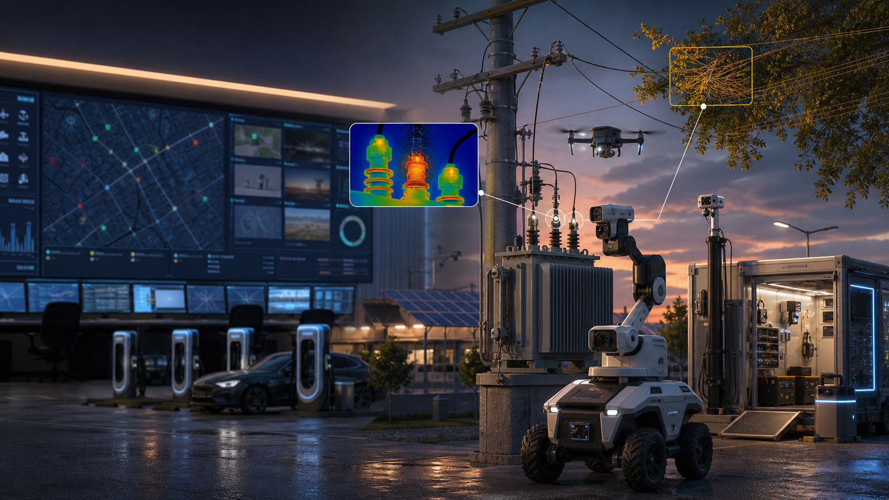

调度 / 可靠性
需要更快定位故障原因和影响客户，而不是在 ADMS、OMS、AMI 和电话记录之间拼线索。
01 · Problem
配网公司已经有 ADMS、OMS、SCADA、AMI、GIS、EAM、DERMS、无人机巡检、植被平台和现场班组系统。可是一旦出现电压越限、配变过载、树障、热缺陷、馈线跳闸、DER 约束或风暴损伤，运营团队仍要跨系统追上下文、派人、复核、写报告。
需要更快定位故障原因和影响客户，而不是在 ADMS、OMS、AMI 和电话记录之间拼线索。
无人机和热像发现很多缺陷，但哪些要今天处理、是否已修复、是否复发，常常难以闭环。
EV、光伏和储能让馈线容量变成动态问题，传统年度规划无法处理每天出现的约束异常。
SAIDI/SAIFI、植被山火、风暴恢复和投资证明都需要证据链，而不是事故后手工复盘。
02 · Why We Solve It
AI 数据中心、EV 充电、分布式光伏、储能和极端天气都在同一张配网末端叠加。硬件扩容必须做，但周期长、供应紧。GridLoop 的切口是让现有配网少停电、少出车、多承载，并把每次处置变成可学习数据。
停电分钟、重复故障、最差馈线和客户投诉会进入监管、绩效和投资论证。
变压器短缺、EV 峰值和分布式光伏反向潮流让配变/馈线容量每天被重新测试。
无效巡线、重复出车、人工读图和风暴后低效定位，是 utility 能直接核算的现金成本。
每次缺陷、派工、复扫、恢复和误报，都能训练下一轮配网机器人和边缘 AI。
03 · Why Now
这不是未来十年的抽象趋势。2025-2027 的政策、投资和可靠性压力已经把配网从“输电末端”推成能源转型主战场：发电能建，负荷能来，但配网能不能看见、解释和关闭异常，决定接入速度和服务质量。
04 · Insight
电压、电流、热像、无人机照片和工单都能采集。真正稀缺的是闭环标签：哪个告警是树障、哪个是接头过热、哪个是配变过载、哪个是客户侧问题、哪个是 DER 约束、谁处理、多久恢复、是否复发。
把馈线、开关、配变、客户、DER、天气、巡检缺陷和工单结果连成异常图谱。
先做只读接入、人工审批、证据包和工作流，不碰保护逻辑和真实电网控制。
每次误报、漏报、复扫失败和人工 verdict 都回流成 LeRobot/CloudTwin 数据。
05 · Solution
它不替代 Schneider、Siemens、GE Vernova、Oracle、AspenTech/OSI、Hitachi、Itron、Landis+Gyr、Uplight/AutoGrid、AiDash、Neara、LineVision、Gridware 或巡检 AI。它把这些系统产生的异常变成可分派、可复核、可审计、可学习的关闭结果。

06 · Product
最好的试点不是“全量数字孪生”，而是 5-20 条馈线或 500-5000 个资产上的一个高价值闭环：热缺陷、植被/山火、低电压、配变过载、DER/EV hosting 或风暴损伤。
AMI、OMS、SCADA、无人机、热像、传感器和客户投诉进入同一个异常池。
拓扑、天气、负荷、DER、设备年龄、历史工单和现场证据组合成 root-cause hypothesis。
按 CMI、风险、班组位置、天气窗口、备件和 SLA 推荐最优工单。
复扫图像、温度回落、遥测恢复、客户投诉下降和人工验收形成 closure packet。
重新打开、误报、漏报和重复根因进入模型与流程迭代。
07 · Market
GridLoop 的买方不是单一部门。中国是省市电网、供电局、数字化子公司、设计院、园区能源、充电运营和 VPP 生态；海外是 DSO/utility 的 reliability、asset、vegetation、storm、DER planning 和 field operations。
客户投诉、AMI 电压、台区拓扑和历史工单合并，减少重复投诉和无效出车。
EV、光伏、储能和热模型共同预测过载，支撑扩容、调度或需求响应建议。
无人机/机器人热像、可见光和声学异常转成 EAM 工单和复扫关闭条件。
卫星、巡检影像、气象、线路走廊和工单状态形成风险闭环和审计证据。
hosting capacity、反向潮流、灵活接入和 VPP 事件需要跨 DERMS/ADMS 的闭环。
OMS、客户来电、无人机照片和 crews 进展合成恢复优先级和事后报告。
08 · Business Model
GridLoop 的商业包装应面向预算 owner：outage intelligence、vegetation/wildfire、transformer/feeder capacity、inspection AI closure、storm restoration、regulatory reporting。每个模块都要能给出直接现金收益或可靠性指标。
5-20 条馈线或 500-5000 个资产；中国 10-50 万元，海外 5-15 万美元起。
中国县/市局 30-200 万元/年，省级 rollout 200-1000 万元+；海外 7.5-150 万美元/年。
站房、弱网馈线、巡检车和机器人网关按点位或设备收取硬件与运维费用。
对少出车、少巡检、减少重复故障、延期扩容和报告工时节省收 5%-10% 封顶分成。
09 · ROI
可靠性改善有社会价值，但第一张订单要先用 utility 能审计的硬指标：truck roll、巡检成本、time-to-locate、风暴加班、重复缺陷、延期扩容、报告工时和 CMI/SAIDI/SAIFI 变化。
试点馈线 GIS、OMS、AMI、SCADA、EAM 资产/客户匹配率超过 95%。
疑似故障位置在传感/AMI 密度允许时缩到 100-300m，原因定位时间下降 30%-50%。
试点馈线诊断出车下降 10%-20%，巡检每英里/每结构成本下降 30%+。
7 天配变峰值预测 MAPE 10%-15%，DER/EV interconnection 预筛从周级缩到天级。
10 · Go To Market
不要正面挑战主站和调度系统。先读不控，先从巡检缺陷、AMI power-quality、DER 约束跟进、GIS/ADMS 模型修正或植被/山火审计切入，再把状态写回系统记录。
通过设计院、系统集成商、巡检/监测 OEM、国网/南网生态和园区能源项目进入。
从 wildfire/vegetation、storm restoration、worst-feeder reliability 或 EV load growth 团队进入。
只读接入 ADMS/OMS/SCADA/AMI，所有工单和模拟操作都需要人工审批。
试点馈线 -> 最差馈线组合 -> 多模块 -> 可靠性/投资证明 enterprise platform。
11 · Competition
GridLoop 不说 autonomous grid、single pane of glass、ADMS replacement、DERMS replacement、digital twin 或 inspection AI。更可信的话是：vendor-neutral exception closure for distribution operations。
Schneider、Siemens、GE Vernova、Oracle、AspenTech/OSI、Hitachi 强在主站和控制。
Itron、Landis+Gyr、Uplight/AutoGrid、Smarter Grid Solutions 强在计量、DER 和灵活性。
AiDash、Neara、LineVision、Gridware、Buzz、eSmart、Noteworthy 强在检测和数据采集。
把跨系统异常归并、派发、证据、写回、reopen 和 root cause 度量成闭环。
12 · Moat
护城河不是一个热像模型，而是 feeder/customer/asset/crew/work-order/evidence/result 的长期闭环图谱。它会告诉客户：哪些异常值得出车，哪些需要无人机，哪些是客户侧问题，哪些要扩容，哪些是系统模型错了。
馈线、配变、开关、客户、DER、EV、植被、缺陷和投诉形成动态异常图谱。
每次派工、误报、修复、复扫、恢复和验收都成为模型可学习标签。
接入 ADMS/OMS/EAM/GIS/班组流程后，替换成本来自日常运营和审计记录。
弱网现场也能用 Qualcomm edge 生成本地证据、模型版本和审计链。
13 · Architecture
GridLoop 的架构要让评委看到工程边界：OT 只读、安全隔离、边缘 AI、本地缓存、证据哈希、云训练、模型回滚和人工审批。
14 · Competition Demo
用 OpenDSS/GridLAB-D 数字馈线驱动一个 24V 桌面可视馈线：源端、馈线 A/B/C、常开联络、EV 负荷、光伏/储能模拟、可调负载、热缺陷道具、低压继电器和机器人/gantry 巡检。
EV inrush 或热接头道具触发电压跌落、过流、模拟跳闸和 lost load。
LeRobot 控制的 gantry/rover 读取 AprilTag，采集可见光和热像。
QNN/ONNX 节点输出热异常/无物理危险/证据缺口，安全节点检查状态。
人类操作员批准后才闭合低压模拟继电器；过温、机器人未清场或遥测过期会阻断。
负荷恢复、遥测正常、事件日志、证据包和 LeRobotDataset episode 导出。
15 · Why Qualcomm
站房、巡检车、无人机、机器人、弱网片区和应急现场都需要本地推理、传感融合、低功耗计算、安全身份和长期供货。Qualcomm 能把机器人比赛 demo 拉成面向能源韧性和城市基础设施的参考架构。
热缺陷、植被分割、表计识别、声学异常和多模态融合适合在现场先筛选。
RB3/RB5/Dragonwing 路线可以连接 ROS 2、相机、IMU、热像和外设。
模型编译、profile、QNN context 和 ONNX Runtime QNN EP 可以成为参赛性能证据。
中国做本地部署和源网荷储协同，海外做老化配网、山火植被和 DER/EV 约束。
16 · Ask
这不是要求 Qualcomm 背书电网控制安全，而是用低压 HIL demo 证明：边缘 AI、机器人巡检、LeRobot 数据和异常闭环可以服务高价值能源基础设施场景。
获得 Qualcomm 机器人/IoT 开发板、AI Hub/QNN 优化路径和 profiling 支持。
连接园区能源、充电运营、配网运检或无人机巡检伙伴，拿到真实流程反馈。
明确低压 HIL、只读接入、人工审批、不接管 SCADA/保护系统的边界。
把 LeRobot + Qualcomm edge + 配网异常闭环包装成开发者案例。
17 · Claims / Sources
GridLoop 不主张真实电网故障自动处置、保护控制、带电作业安全认证、NERC/CIP 合规、UL/IEC/NFPA 认证或上线前 NPU 实时性能。比赛演示只做 24V 低压 HIL 和人审模拟继电器闭环。